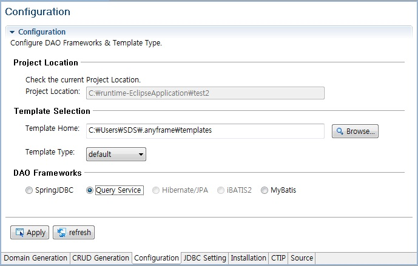

Configuration
Anyframe IDE을 사용하기 위해 Project Location 확인 및 Template, DAO Frameworks 정보를 설정한다.
Template은 기본적으로 default, miplatform, xplatform 4가지 종류의 템플릿이 제공되나 install된 Anyframe Plugin 정보에 따라 사용할 수 있는 템플릿이 제한될 수 있다.
Installation Tab에서 miplatform, xplatform Plugin을 설치한 경우 template 목록에 추가되어 선택할 수 있다.
프로젝트를 생성하면 기본적으로 SpringJDBC DAO Framework 을 사용하도록 설정되어 있으며,
Query, Hibernate/JPA, iBATIS2, MyBatis로 DAO Framework 설정을 변경하고 싶을 경우 Installation Tab에서 query, hibernate, iBATIS2, MyBatis Plugin을 각각 설치해야 한다.
- 프로젝트를 선택한 후 우 클릭 >> Anyframe Tools >> Anyframe IDE 메뉴를 선택한다.
- Anyframe IDE Editor에서 Configuration Tab을 선택하고 프로젝트 정보 확인 및 Template, DAO Framework 정보를 구성한다.
- Project Location: 현재 프로젝트가 생성된 위치정보가 보인다.
- Template Selection : 소스코드 template을 설정하기 위한 섹션으로 Maven 프로젝트 일 경우에만 Template Home 경로를 변경할 수 있는 기능이 추가로 제공된다.
- Template Home: Maven 프로젝트 일 경우에만 활성화 되는 부분으로, Template 홈 경로를 변경할 수 있다.
Ant 프로젝트 일 경우는 [Anyframe 을 설치한 root 폴더 경로]\templates 가 template home 경로로 되며, 화면에서 변경할 수 없다.
- Template Type: Template Home 경로 하위에 있는 template을 리스트로 보여주며,
기본적으로 default template이 지원된다.
default template은 Spring/SpringMVC 등으로 구성된 소스 코드 template이 제공된다.
mip-query Plugin을 설치한 경우 miplatform template을 선택할 수 있으며,
xp-query Plugin을 설치한 경우 xplatform template도 선택할 수 있다.
miplatform template 와 xplatform template의 경우 PID(Presentation Interface Developer)가 설치되어 있어야 생성된 소스가 정상적으로 동작한다.
- DAO Frameworks: SpringJDBC, Query Service, Hibernate/JPA, iBATIS2, MyBatis 중에 하나를 선택할 수 있고,
Query Service의 경우 Query Plugin을 설치한 이후에, Hibernate/JPA는 Hibernate Plugin을 설치한 이후에, iBATIS2는 iBATIS2 Plugin을 설치한 이후에, MyBatis는 MyBatis Plugin을 설치한 이후에 선택이 가능하다.
현재 Anyframe 설치 시 배포되는 default template의 경우, SpringJDBC, Query Service, Hibernate/JPA, iBATIS2, MyBatis를 지원하고 miplatform, xplatform template의 경우 Query Service만 지원한다.

- 입력정보 작성이 끝나면 반드시 Apply 버튼을 클릭하여 Configuration 정보가 저장되도록 한다.
구성한 정보가 정상적으로 반영되었는지 확인하기 위해서는 탐색기에서 선택한 프로젝트 경로로 이동하여, project.mf 파일 내의
project.daoframework(DAO Frameworks), project.template.home(Template Home 경로), project.template(Template Type) 항목의 값을 확인해본다.
정상적으로 반영이 되었다면, 해당 항목의 값이 입력한 값들로 변경되어 보일 것이다.
참고로, project.home 은 프로젝트 경로 정보이다.
|